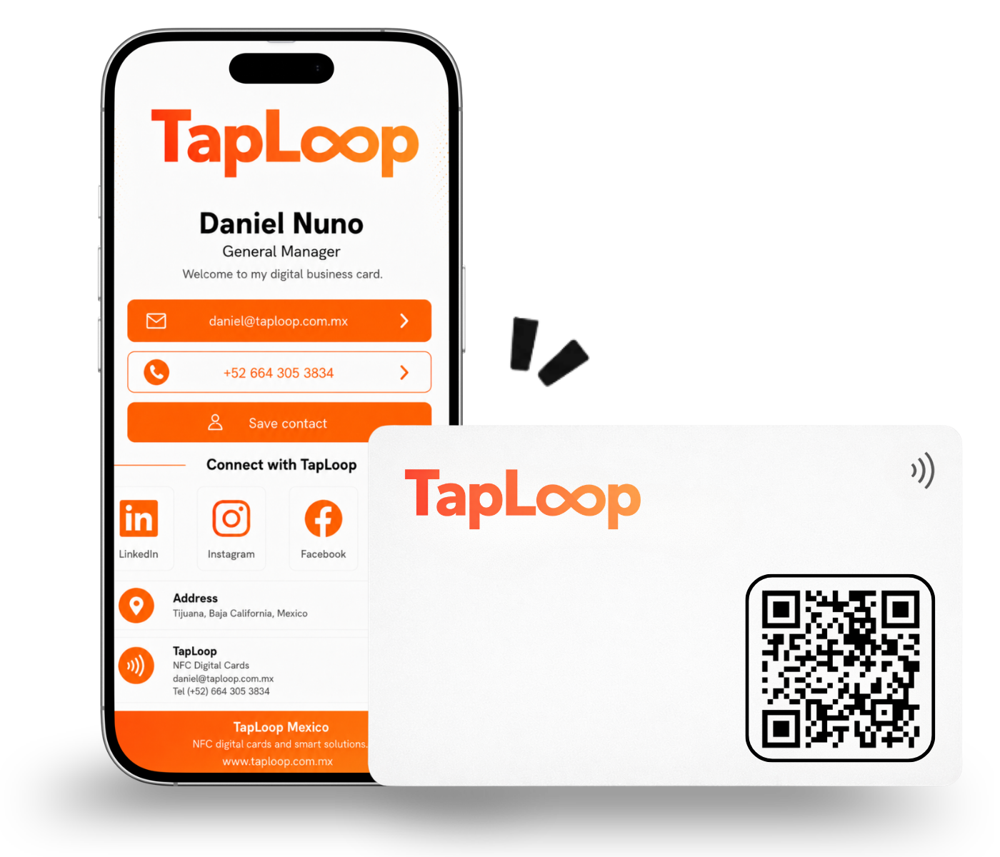
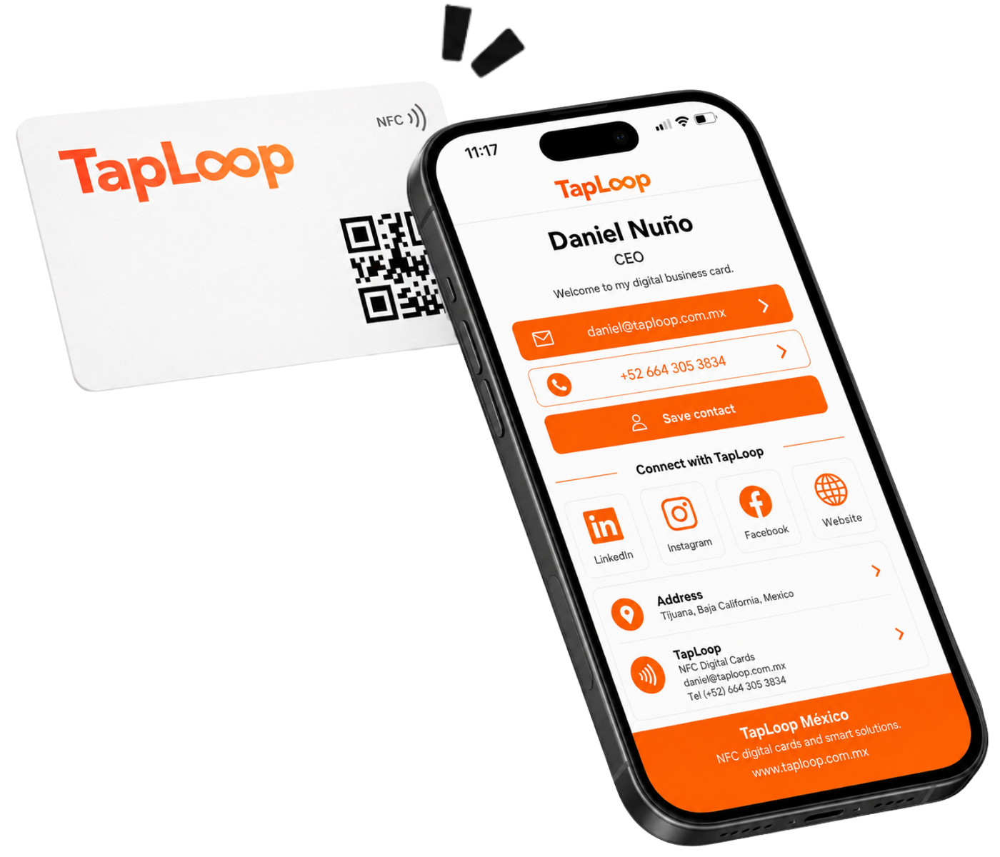
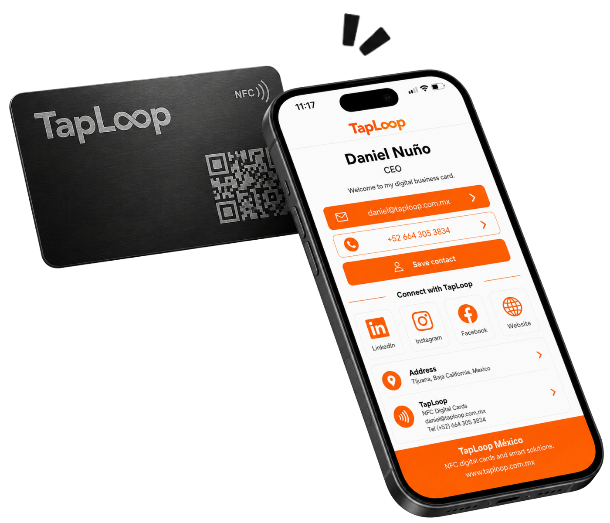
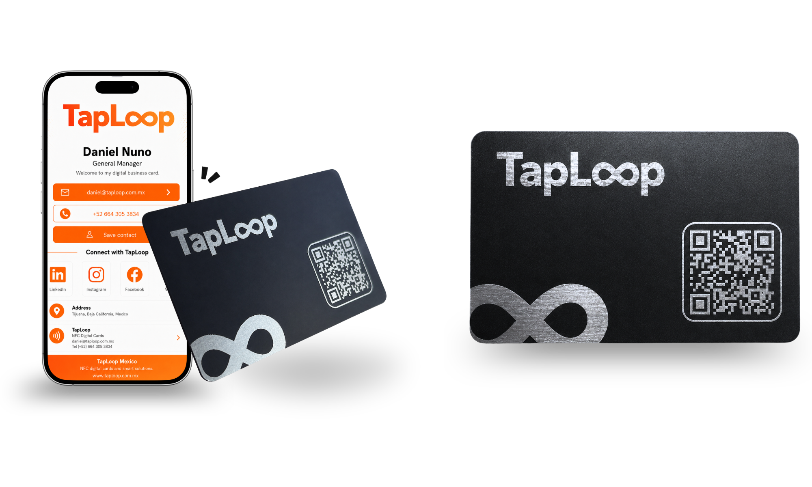
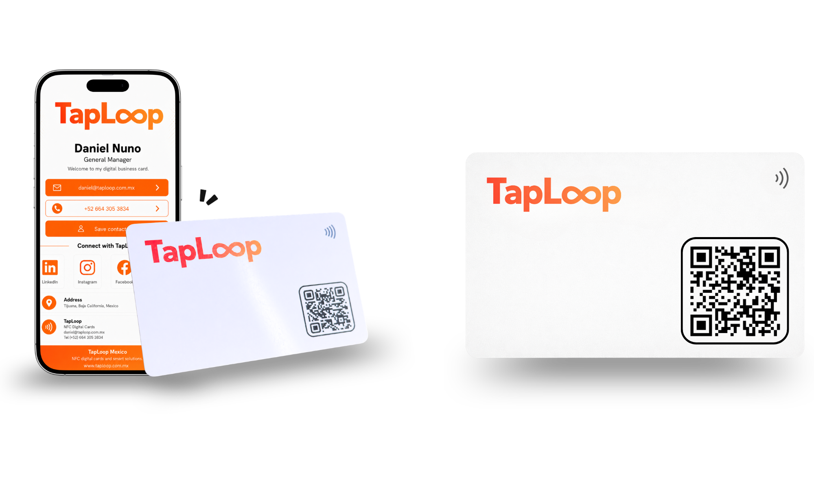
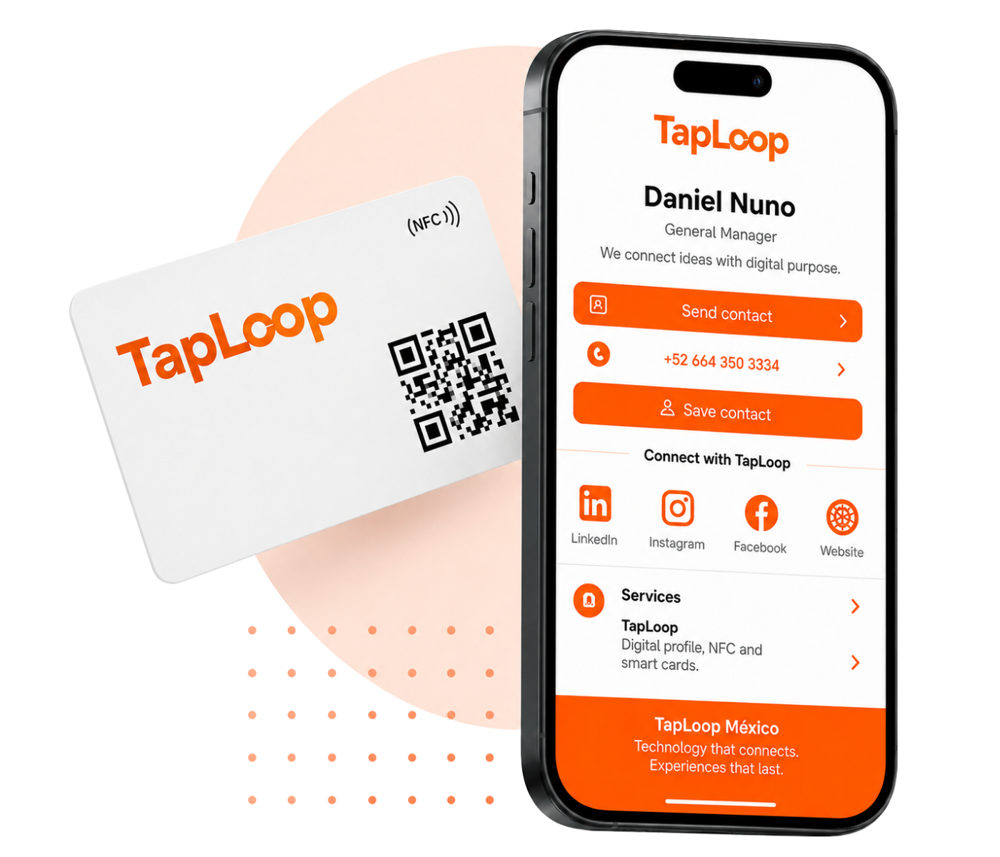
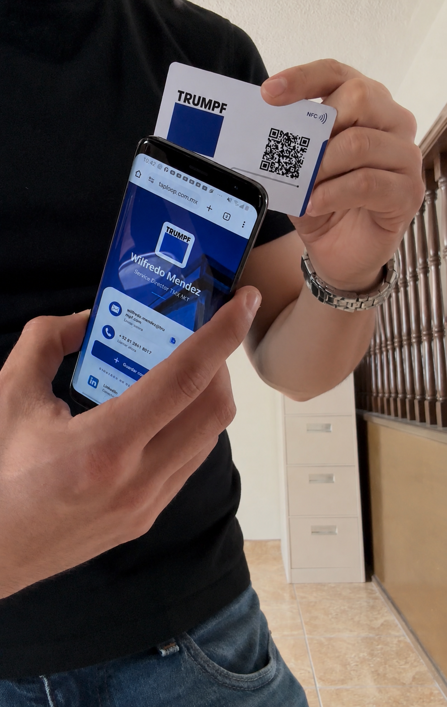
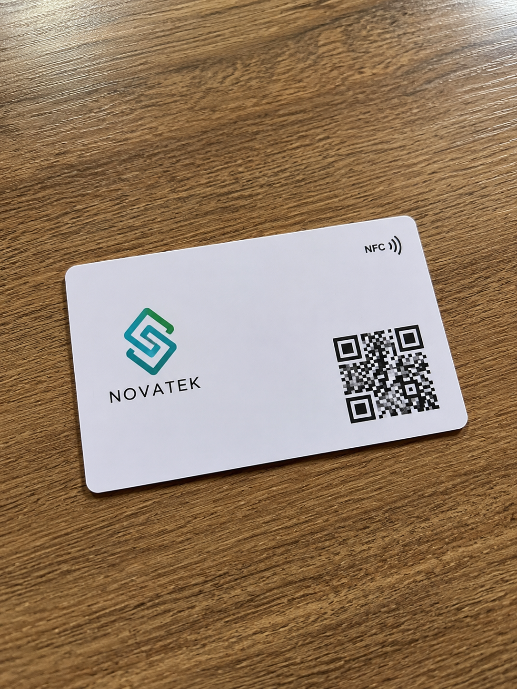

Digital business card + NFC + QR
Digital NFC Business Cards
Share your contact details, WhatsApp, website, social links, and digital profile with one tap or a QR scan.

Choose a PVC digital NFC card, a premium metal NFC card, or a branded rollout for your whole team.

Practical, durable, and easy to customize for sales, events, teams, and everyday networking.
View Product
A stronger first impression for executives, partners, consultants, and premium brands.
View ProductWe design, program, test, and ship your NFC cards ready to use.
Send your logo, contact details, links, and card quantity.
Start My ProposalApprove a branded card and digital profile tailored to your use case.
We connect the NFC chip and QR code to the same digital profile.
Every card is tested before delivery so your profile opens correctly.
Share your contact information, WhatsApp, and social media with a premium metal NFC card.

View ProductShare your contact information, WhatsApp, and social media with a personalized digital NFC business card.

View ProductOne reusable card, one editable digital profile, and one clean way to follow up after every meeting.

Your card and profile match your logo, colors, role, and brand style.
Share phone, email, WhatsApp, social media, website, location, files, and more.
Two access methods lead to the same digital business card experience.
Our team helps you move from idea to delivered cards with clarity.
TapLoop helps sales teams, consultants, real estate advisors, executives, and founders share contact information faster.

"Clients save my contact immediately, and the card feels much more professional than sending details by text."

"Our sales team keeps one consistent brand look, and profile updates are simple."

"People open my profile, website, and scheduling link in seconds. It makes follow-up easier."
Answers about TapLoop NFC cards, digital profiles, and team solutions.
It is a physical card with an NFC chip and QR code that opens a digital profile with contact details, WhatsApp, social media, website, and links.
No. The digital profile opens in the phone browser through NFC or QR code.
Yes. The card and profile can be customized with your logo, colors, name, role, QR code, and key links.
Yes. We can create a consistent visual system and one digital profile for each employee.

Ready to start?
Tell us how many cards you need, which card type you prefer, and what your digital profile should include.